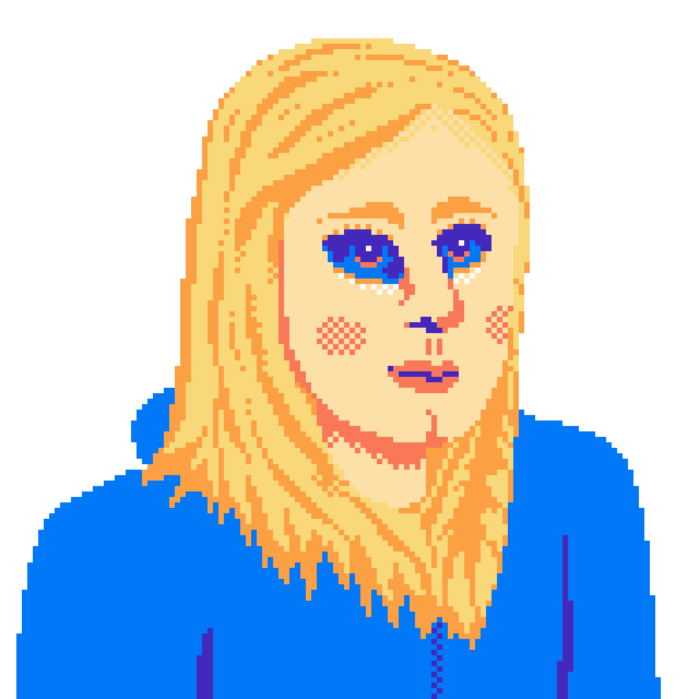
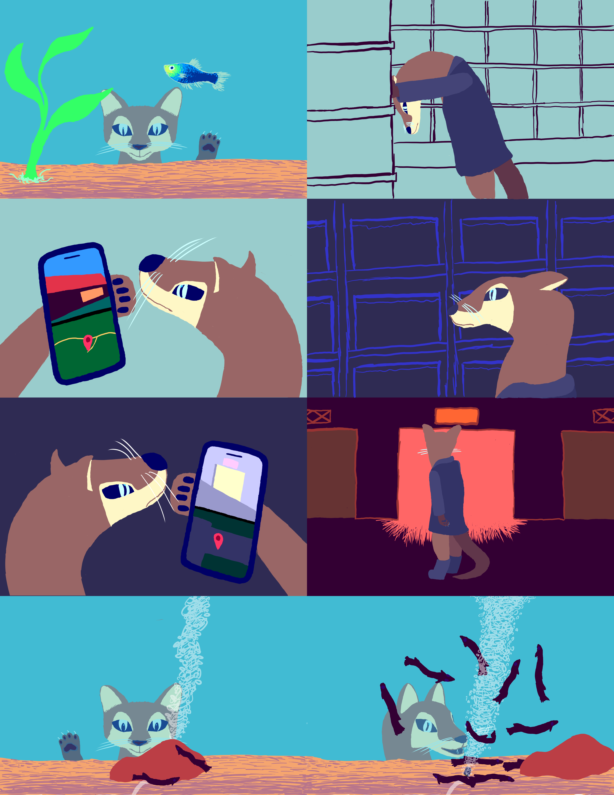
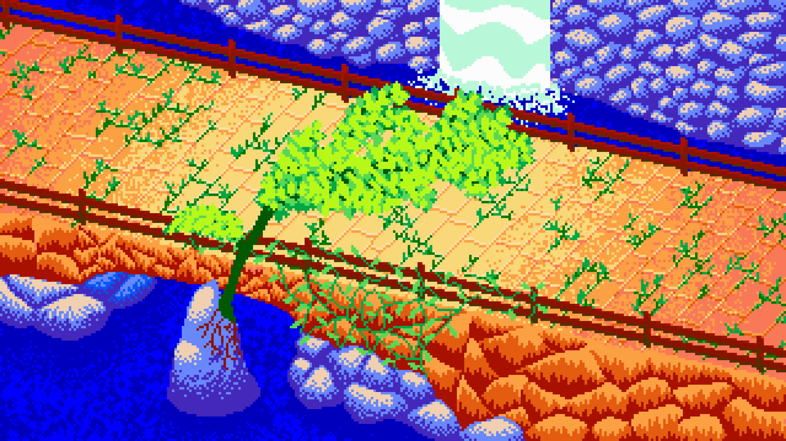
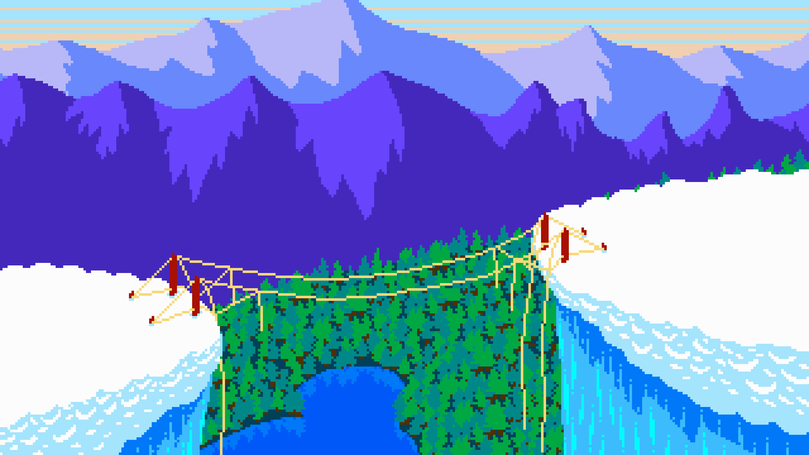
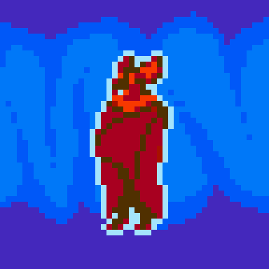

This is a pixel art recreation of the painting by Theodore Rousseau. I created it for my French 5 final in high school.
Oscilloscope (2022)
This is the layout I use when uploading Sega Genesis music to my YouTube channel. It depicts analog equipment used for displaying waveforms.

Self Portrait (2022)
This is a self-portrait I created for my digital art class.

Quest (2022)
I created this for a digital art assignment which involved creating a wordless 8-panel comic. It is an adaptation of my own journey in finding a store that sells Kuhli loaches. The creature depicted is an Aquatic Genet, which is a fish-eating mammal.

Sunken Relic Zone (2023)
This is concept art for the zone in SHIMA. It was also made as a companion to act 2's music. I limited myself to using a more vibrant variation of the color palette used by the NES.

Botched Crossing (2023)
This was made as a companion to the song of the same name. This uses the same color palette as Sunken Relic Zone.

 This is a pixel art recreation of the painting by Theodore Rousseau. I created it for my French 5 final in high school.
This is a pixel art recreation of the painting by Theodore Rousseau. I created it for my French 5 final in high school.